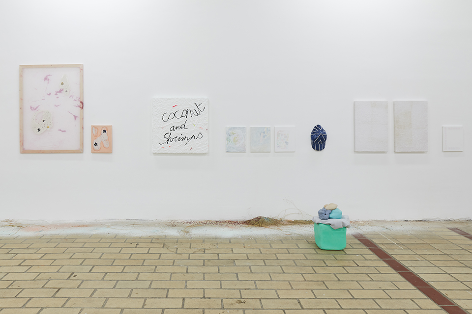

DELPHINE BERTRAND
Visual artist based in Rennes,
indoor landscape gardener
ABOUT
CV

On the wall, from left to right : works from Lucie Férézou, Sylvain Rousseau, Camille Girard & Paul Brunet, Thomas God. Sculpture on the ground : Céline Le Guillou.
Installation on the floor : Delphine Bertrand.


La réserve
Pearly shells reduced to glitter, slate reduced to glitter, flowers of mist, ashes from stems and burned flowers of mist, twigs, scallop shell, sand (all gleaned materials), pigments
La Grande Diagonale, curated by Bruno Peinado, La Sation, Nice
June 2021
With the support of ÉESAB, Quimper
Photographs : Jean-Christophe Lett


On the wall, from left to right : works from Thomas God, Sylvain Rousseau and Fleur Noguera.

On first plan : work from Elsa Tomkowiak.

On the wall : work from Kahina Loumi.

Sculptures on the floor, from left to right : works from Lucie Férézou, Elsa Tomkowiak, Guillaume Le Clouërec. On the wall : Postcard, Kahina Loumi, 2021.


Left part, on the floor : works from Yoan Sorin, on the wall : Maxence Chevreau, Simon Leroux.
An exhibition with Reda Boussella, Delphine Bertrand, Maxence Chevreau, Lucie Férézou, Camille Girard & Paul Brunet, Thomas God, Loris Humeau, Margaux Janisset, Guillaume Le Clouërec,
Céline Le Guillou, Simon Leroux,
Kahina Loumi,
Fleur Noguera,
Renaud Perriches, Boris Régnier, Sylvain Rousseau, Yoan Sorin and Elsa Tomkowiak.